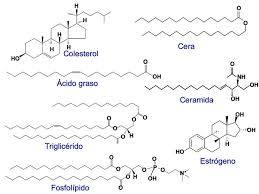
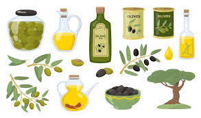
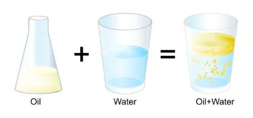
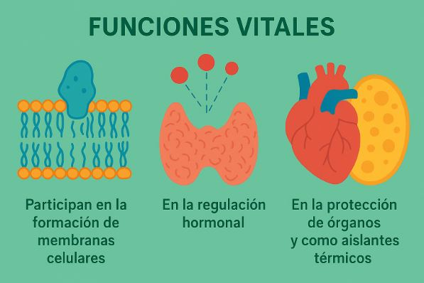
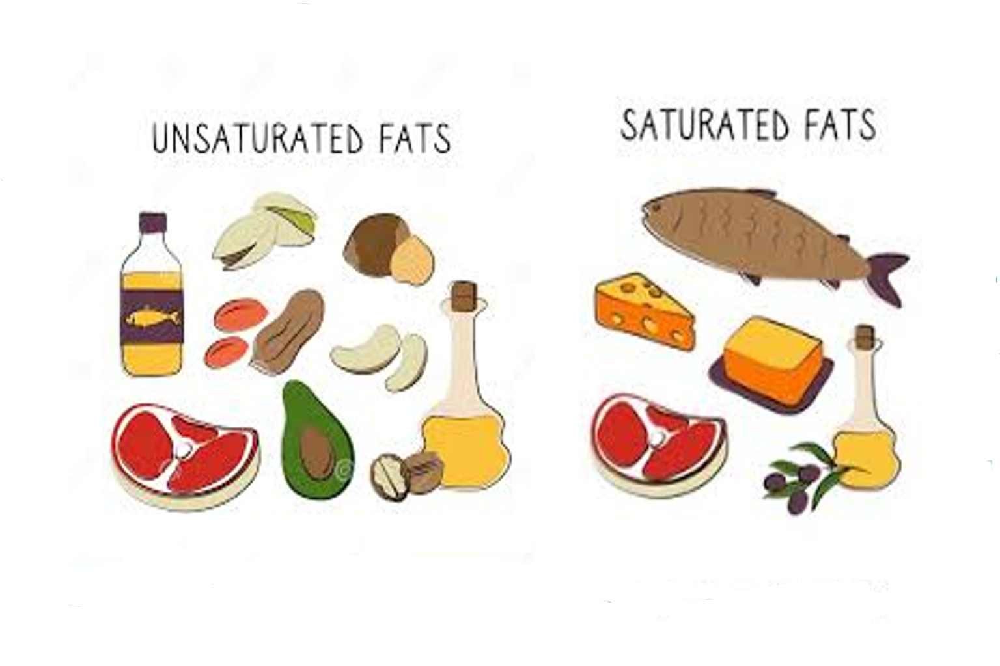

Diversidad estructural

Pueden presentarse como grasas, aceites, ceras, fosfolípidos o esteroides, lo que les permite cumplir múltiples funciones.
Estado físico variable

Pueden ser sólidos (grasas) o líquidos (aceites), dependiendo del tipo de ácidos grasos que los formen.
Baja densidad

Son más ligeros que el agua, lo que permite que floten y cumplan funciones de protección y aislamiento.
Funciones vitales

Participan en la formación de membranas celulares, en la regulación hormonal, en la protección de órganos y como aislantes térmicos.
Reactividad con ácidos y bases
Los lípidos pueden reaccionar con ácidos y bases, un ejemplo es la saponificación, donde los triglicéridos reaccionan con hidróxido de sodio para formar jabón y glicerol.
Estabilidad y susceptibilidad a la oxidación

Los lípidos insaturados son más susceptibles a la oxidación, lo que produce rancidez en alimentos. Los lípidos saturados son más estables y menos propensos a degradarse.
Ir arriba